1PERGUNTAR
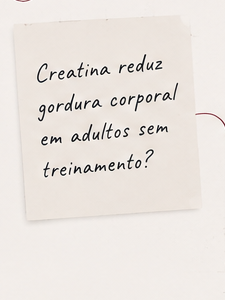
Não aceite a evidência.
Interprete.
TURMAS 2026
TURMAS DO INTERPRETE
Uma formação de 9 meses para aprender a buscar, interpretar e aplicar evidências científicas na prática — com uma base completa em Prática Baseada em Evidências e três meses dedicados à Nutrição.
Próxima turmaA definir
VagasA definir
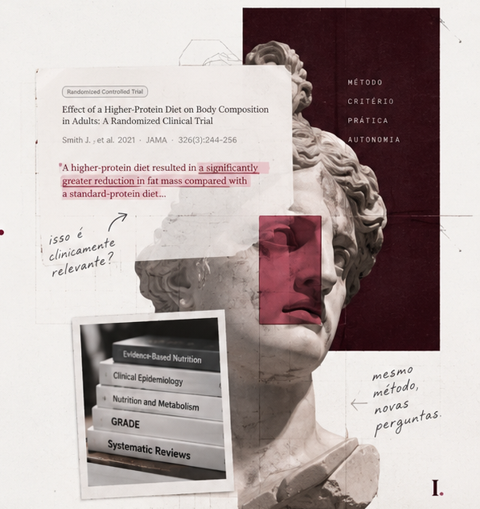
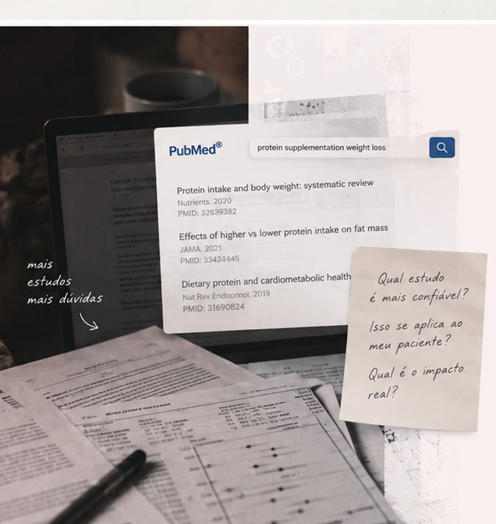
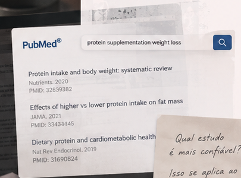
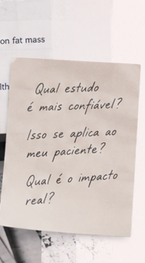
Artigos, diretrizes, aulas, podcasts, posts, congressos.
O problema aparece quando você precisa decidir o que merece confiança e o que realmente muda uma conduta.
Um estudo encontra benefício. Outro encontra pouco efeito. Uma diretriz recomenda. Um professor discorda. O resultado é estatisticamente significativo, mas ninguém explica se a diferença importa de verdade.
E aí chega a parte que interessa para a prática:como um profissional baseado em evidências decide?
É isso que você aprende no Interprete.
Ver como funciona ↓Mais do que respostas prontas, você aprende um método para transformar dúvidas reais em decisões baseadas em evidências.
Da construção da pergunta à aplicação na prática, o mesmo processo se repete — independentemente do tema. Hoje pode ser creatina. Amanhã, obesidade. Depois, suplementação, saúde da mulher ou uma intervenção que ainda nem entrou nas diretrizes.
A pergunta muda.
Seu critério fica.
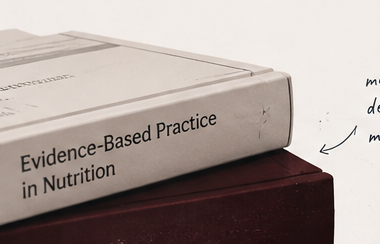

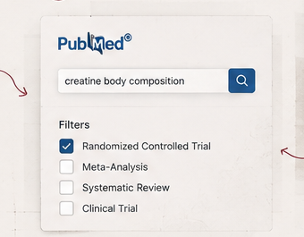
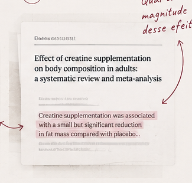
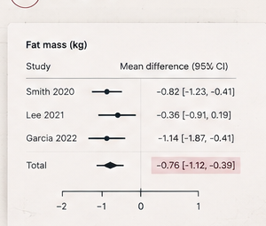
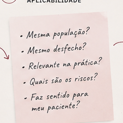
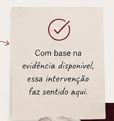
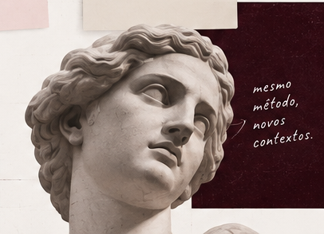
O Interprete é uma formação em turma, com encontros ao vivo, leitura orientada, discussão de artigos, aplicação prática e feedback ao longo de todo o percurso.
Você não estuda sozinho. Você aprende a pensar melhor, junto com outras pessoas que levam a evidência a sério.
Discussão de artigos, casos e aplicação na prática.
Mais participação, mais feedback, mais aprendizado.
Materiais e leituras orientadas a cada etapa.
Troca entre alunos e professores durante toda a formação.
Casos reais e exercícios de interpretação.
Feedback para ajudar você a evoluir de forma consistente.
O objetivo não é que você assista a mais aulas.
É que você se torne um profissional mais preparado para lidar com evidências no seu dia a dia.
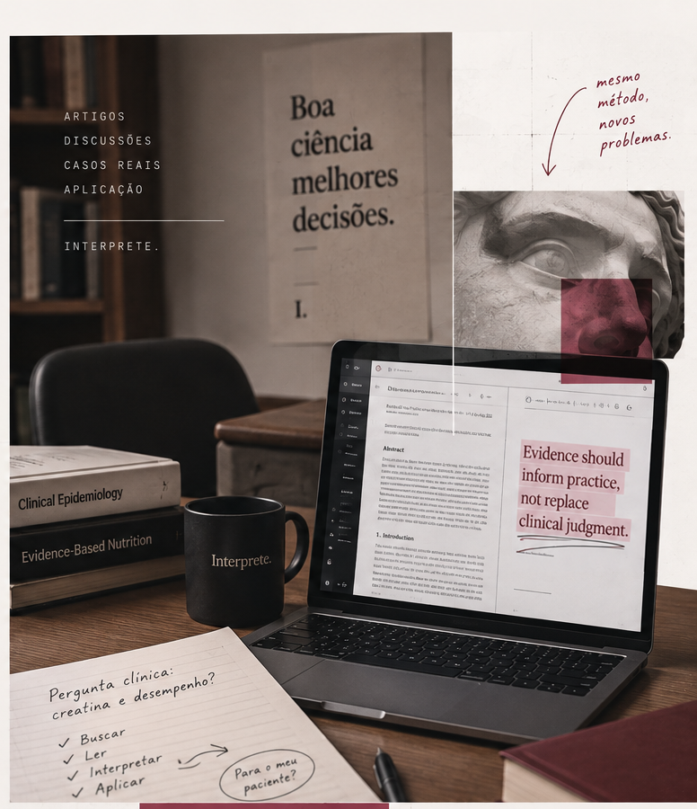
DA LÓGICA À APLICAÇÃO
DO MÉTODO À PRÁTICA
Nos três meses finais, o método é colocado em prática em temas centrais da Nutrição, com discussão de estudos, diretrizes e controvérsias da área.
Duas etapas. Um mesmo objetivo:uma prática em Nutrição realmente baseada em evidências.
Quero ver todos os detalhes da ementa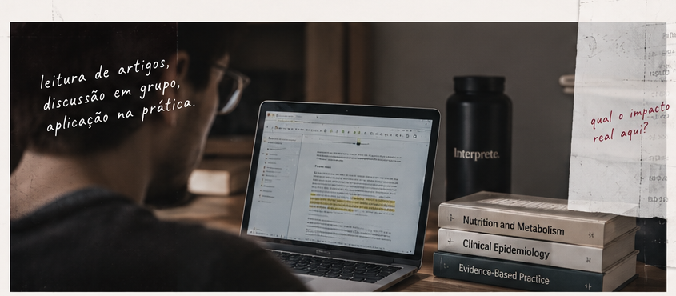
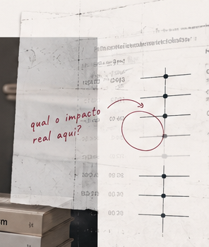
COMO FUNCIONA NA PRÁTICA
Interpretar evidência é uma habilidade.
E, como toda habilidade, ela se desenvolve com prática.
Mais do que conteúdo, você desenvolve competências que mudam a forma como você lida com a informação científica na sua rotina profissional.
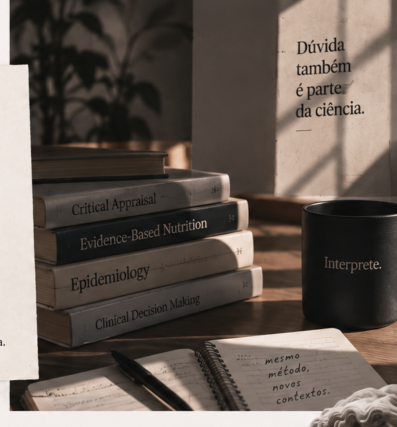
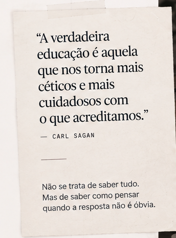
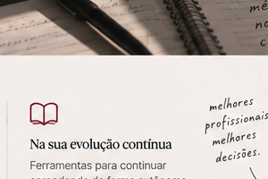
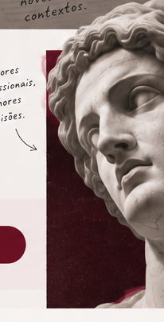
EM DIFERENTES CENÁRIOS
Decisões mais seguras, transparentes e alinhadas com as melhores evidências disponíveis.
Mais confiança para discutir casos, diretrizes e condutas com outros profissionais.
Ferramentas para continuar aprendendo de forma autônoma, mesmo depois da formação.
O REAL OBJETIVOConstruir uma prática realmente
baseada em evidências.
Estudos novos vão continuar aparecendo.
Com o método certo, você sabe como avaliar,
o que considerar e quando aplicar.
PRÓXIMA TURMA
VAGAS A DEFINIR.
InícioA definir
Horário dos encontrosA definir
VagasA definir
InvestimentoA definirA definir
Informações da próxima edição
Datas, investimento, condições, vagas e horários serão atualizados aqui antes da abertura das inscrições.
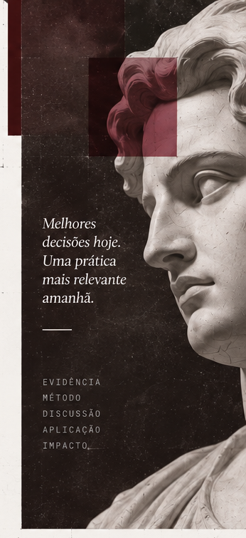
UM CONVITE
“O futuro da nossa área depende de profissionais que saibam interpretar, e não apenas repetir, a evidência.”— Gabriel Schuchter Pereira
PRÓXIMO PASSOMenos dúvidas.
Mais evidências na sua prática.
Junte-se a profissionais que escolhem decisões melhores, com base em evidências, e que acreditam em uma prática mais crítica, humana e atual.
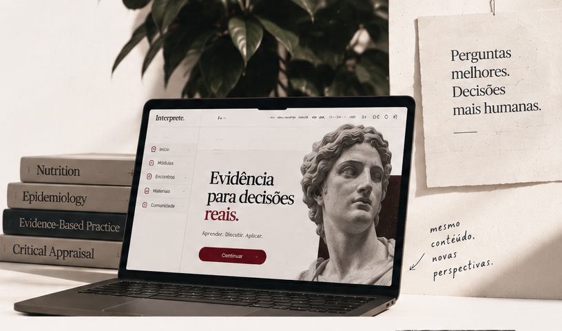